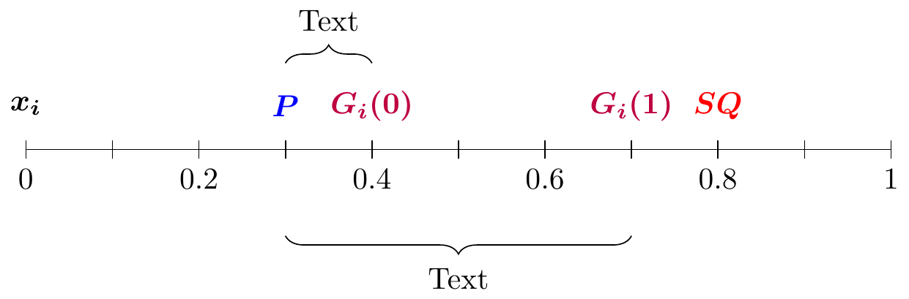

코드
```{r, engine = 'tikz'}
#| label: fig-tikz_first_exam
#| code-fold: true
#| output: asis
#| fig-align: center
#| fig-cap: "tikz in Quarto 예시"
\usetikzlibrary{arrows}
\usetikzlibrary{positioning}
\usetikzlibrary{calc}
\usetikzlibrary{arrows.meta}
\usetikzlibrary{decorations.pathreplacing}
\begin{tikzpicture}
\draw (0,0)node(a){} -- (10,0) node (b) {} ;
\foreach \x in {0, 1, 2, 3, 4, 5, 6, 7, 8, 9, 10} % edit here for the vertical lines
\draw[shift={(\x,0)},color=black] (0pt,3pt) -- (0pt,-3pt);
\foreach \x in {0, 0.2, 0.4, 0.6, 0.8, 1} % edit here for the numbers
\draw[shift={(\x*10,0)},color=black] (0pt,0pt) -- (0pt,-3pt) node[below]
{$\x$};
\node at (8, 0.5) (eq1) {$\textcolor{red}{\boldsymbol{SQ}}$};
\node at (4, 0.5) (eq2) {$\textcolor{purple}{\boldsymbol{G_i(0)}}$};
\node at (7, 0.5) (eq2) {$\textcolor{purple}{\boldsymbol{G_i(1)}}$};
\node at (3, 0.5) (eq3) {$\textcolor{blue}{\boldsymbol{P}}$};
\node at (0, 0.5) (eq4) {$\textcolor{black}{\boldsymbol{x_i}}$};
\draw[decorate, decoration={brace, amplitude=6pt, mirror},] ([yshift=0.5cm]4,0.5)-- node[above=0.25cm]
{\shortstack{Text}}([yshift=0.5cm]3,0.5);
\draw[decorate, decoration={brace, amplitude=6pt},] ([yshift=-1cm]7,0)-- node[below=0.25cm]
{\shortstack{Text}}([yshift=-1cm]3,0);
\end{tikzpicture}
```
